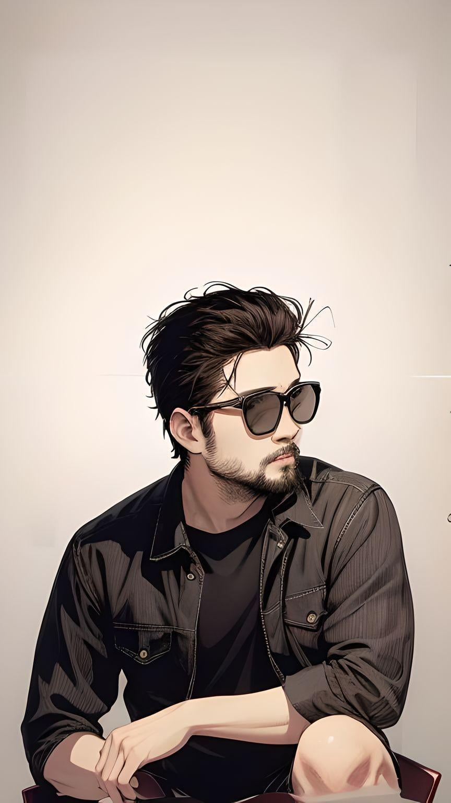

blogs

sajjan karna
He is Sajjan Karna, a full-stack developer and a computer science student with a passion for
crafting seamless digital experiences. Thriving in the realms of React, Node.js, Express, React
Native, Next.js with TypeScript, and having honed his skills over 5+ years, he excels in delivering
high-quality software solutions. Sajjan has collaborated with various companies and clients,
showcasing his proficiency in creating responsive web interfaces, robust server-side systems, and
performant mobile apps across diverse projects. His commitment to excellence and client satisfaction
is evident through his proven track record of successful project deliveries and high-quality
outcomes.
Read more
sajid miya
I'm Sajid Miya, a computer science and engineering student with a passion for technology. While I
have a
decent understanding of various programming languages like C, C++, HTML, CSS, JavaScript, PHP,
MySQL,
and Python, I still lack practical experience. I can build small-scale projects using these tools,
but
I'm not yet job-ready. Currently, I find myself frequently relying on the internet and AI tools to
solve
problems, which limits my ability to excel independently. However, I understand that mastery
requires
time investment, and I'm committed to continuous learning. I believe that with dedicated effort,
I'll
eventually achieve my goals and excel in my field.
Read more